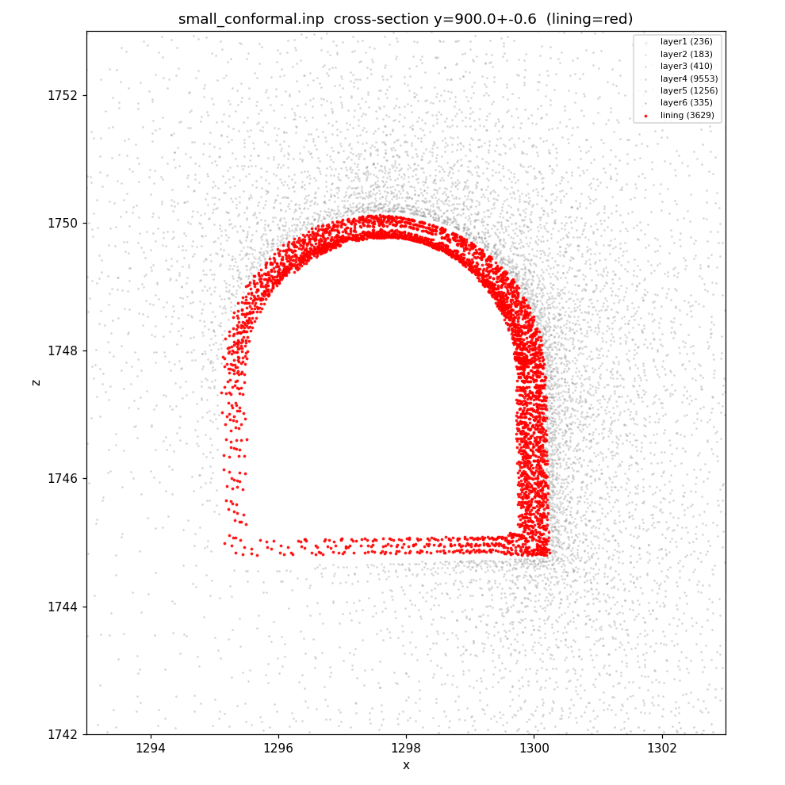
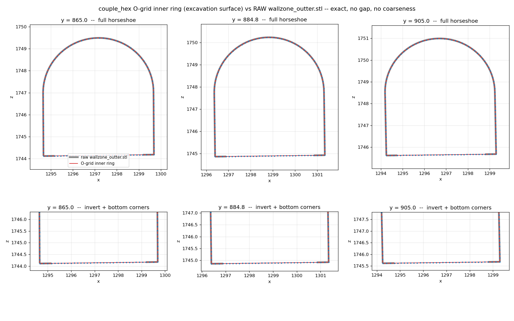
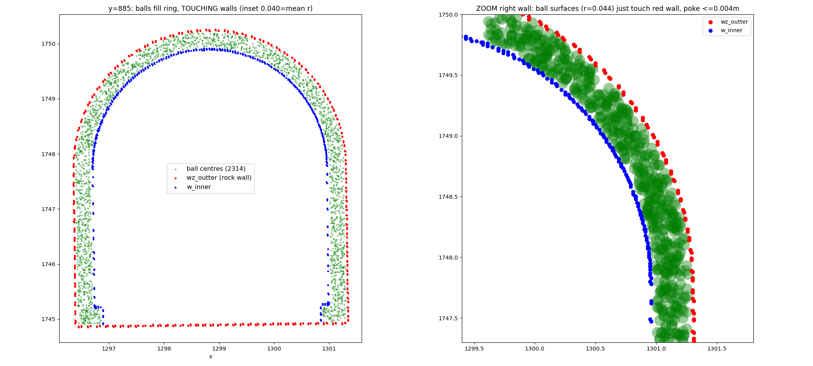

TUNNEL_TX · NUMERICAL METHOD REPORT · 2026-07
營運中山岳隧道
地下水位升降 × 依時變形啟閉 × 圍岩-襯砌互制
跨尺度數值方法與成果
邊坡（大模）→ 隧道圍岩（小模）→ 隧道襯砌（耦合模）｜FLAC3D × PFC 單向傳遞弱耦合（05）與雙向強耦合展望（06）
狀態：大模 ✅ 小模 ✅ 耦合 initial 跑中 ｜ ← → 或按鈕翻頁
CASE
案例：阿里山林鐵 #46 隧道 — 彎道段裂縫與滲水


裂縫位態大致平行地質分層、集中於鐵鏽染＋滲水的砂頁岩互層 → 指向「地下水 × 依時變形」成因假設，而非構造剪動。
DRIVER
驅動源：颱風豪雨引致的地下水位大幅升降


上游測站年擺幅可達 約 30 m → 模擬採 W-00 ~ W-110 水位面族（每 10 m 一階）、漸升漸退。
MECHANISM I
依時變形由「應力門檻」開關 — 修正 Burgers 模型


\( \eta_M=\begin{cases}\eta_M, & q\ge q_{th}\ (\text{潛變開})\\[2pt] 10^{100}, & q< q_{th}\ (\text{潛變關})\end{cases} \)
LARGE · MODEL VIEW
大模 360°：地形與四層地質（gmsh 共形 tet）

域 x 0–2000、y −100–2000、z 800–DEM（高差 ~1400 m）；4 層＝崩積層／砂頁互層／岩盤上部／基盤。
品質：0 負體積、\(\gamma<0.05=0\)、體積總和＝域體積（幾何守恆）。
建模鏈：STL 地質面 → gmsh OCC fragment 共形切層 → ABAQUS .inp → FLAC3D import＋group＋skin。無隧道（遠場）。
LARGE · METHOD
大模方法：11 階段水文排程 × 每階段三相解算

相 1｜流體換水位面 STL → 飽和度/孔壓重設 → 流體穩態（力學關）
→
相 2｜力平衡fluid off → Mohr-Coulomb 平衡 ratio 10⁻⁵
→
相 3｜潛變門檻每階段評估一次（固定 active set）→ 600 s 固定步 → 匯出箱區位移
初始平衡＝W-110 流體穩態 → \(K_0=0.7\) → solve elastic（鐵則）。潛變時鐘為累積制（time-total 用累積天數計數器）。大模自由潛移（無邊界驅動）。
SCALE TRANSFER · METHOD
尺度傳遞：殘差位移驅動＋應變恆等 gate

同一套傳遞邏輯用在兩處：大模 → 小模（605 點 → 14,946 gp）、小模 → 耦合模（邊界帶 → 外邊界 gp）。
\( \mathbf u_{rigid}=\mathbf t+\boldsymbol\omega\times(\mathbf r-\mathbf r_c) \)（最小二乘）\(\;\Rightarrow\;\mathbf u_{drive}=\mathbf u-\mathbf u_{rigid}\)
剛體平移／旋轉對箱內應變零貢獻（占位移 94–96%）——扣除後以 gate 驗證：殘差場與全場的箱區平均應變張量逐分量相等（實測差 \(\sim10^{-19}\)＝機器零）。
\( u(\mathbf x)=\dfrac{\sum_i w_i\,u_i}{\sum_i w_i},\quad w_i=\dfrac{1}{d_i^{\,2}} \) → \( \mathbf v=\dfrac{\mathbf u_{target}-\mathbf u_{now}}{t_{stage}} \)
為什麼不施「力」：力給下游模型會使「支撐受力」變成輸入而非輸出（舊版假耦合教訓）。位移驅動下，襯砌受力由互制自己長出來。
SMALL · MODEL VIEW
小模 360°：六層共形地質＋馬蹄襯砌環（剖切）


箱 100³ m；馬蹄 5.0×5.4 m；洞壁加密 0.2 m。「立方網格 × 嚴格共形地質 × 平滑洞壁」三者互斥 → tet 是唯一同時滿足地形／地質／隧道幾何的選擇。
COUPLED · MODEL VIEW
耦合模 360°：單一等效彈性圍岩＋鍵結球襯砌



hex 品質 aspect 中位 1.84、零翻面——耦合穩定性的根基。